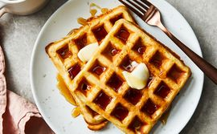

Classic Waffles

Description
"Love this recipe—it has become our weekend go-to for waffles. Kids and adults love them. Not too sweet, cook perfectly...this recipe is perfection every time!"
Ingridients
- 2 cups all purpose flour
- 1 tesaspoon salt or to taste
- 4 teaspoons baking powder
- 2 tables of white sugar
Steps
Step 1
Gather all teh IngridientsStep 2
Mix flour, salt, baking powder, and sugar together in a large bowl; set aside. Preheat waffle iron to desired temperature. Step 3
Beat eggs in a separate bowl; stir in milk, butter, and vanilla.